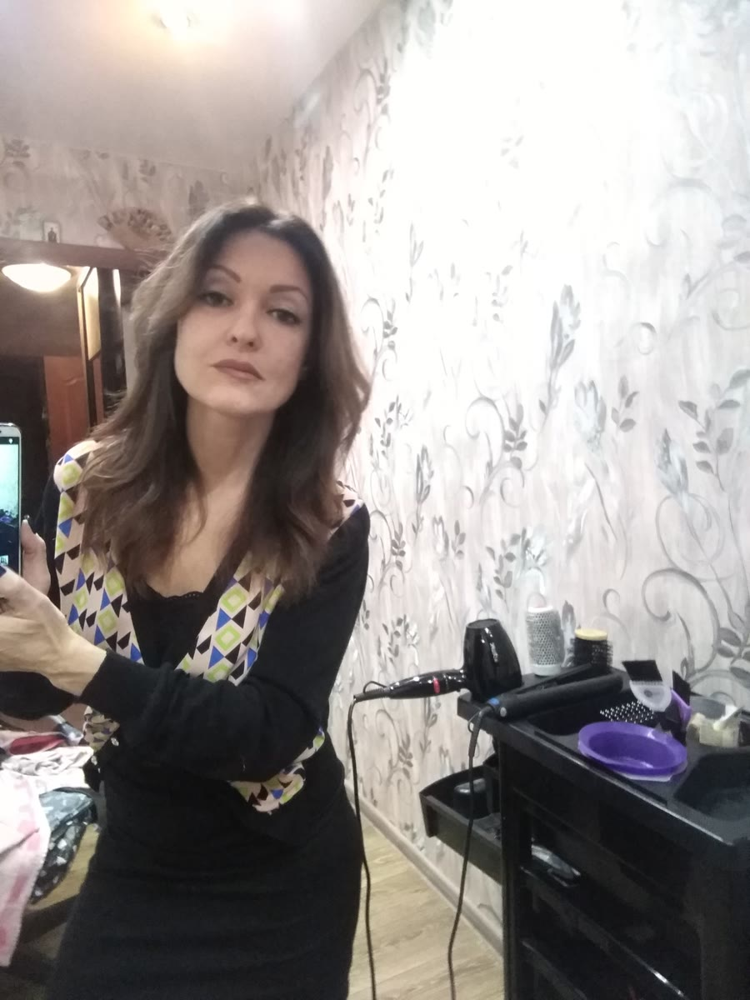
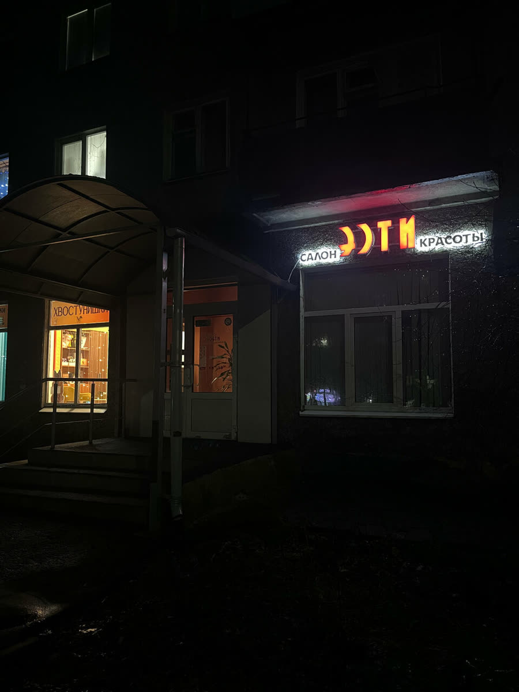
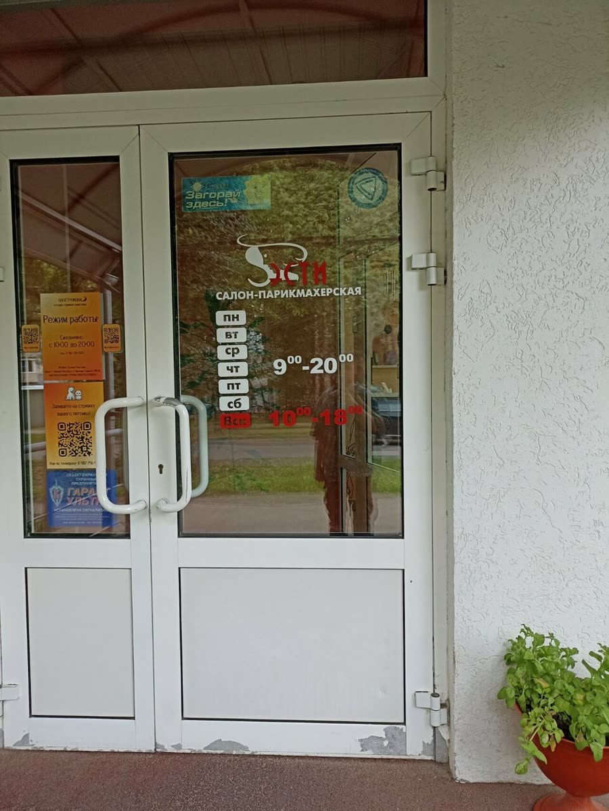
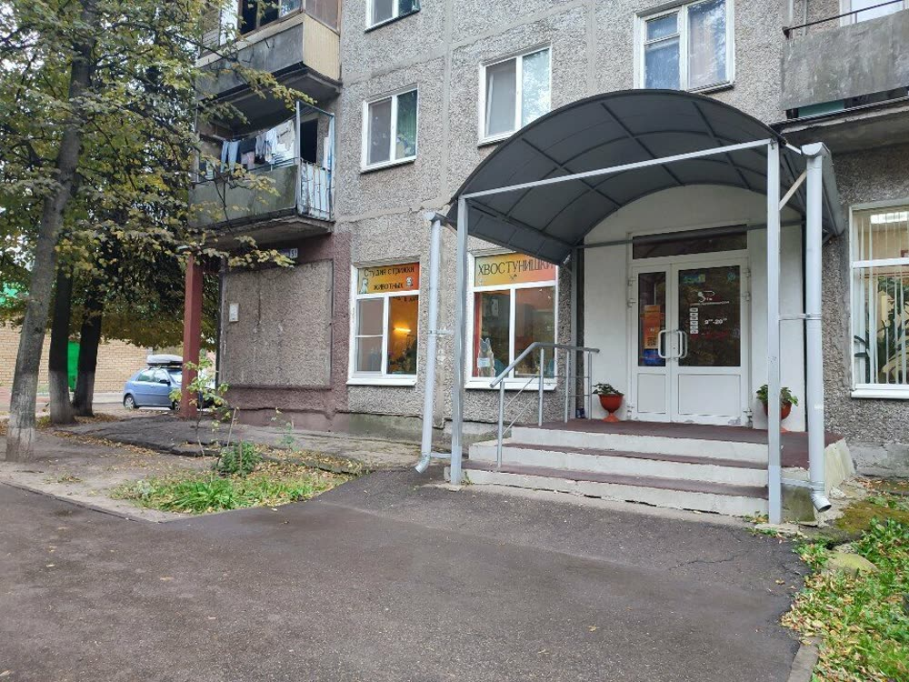
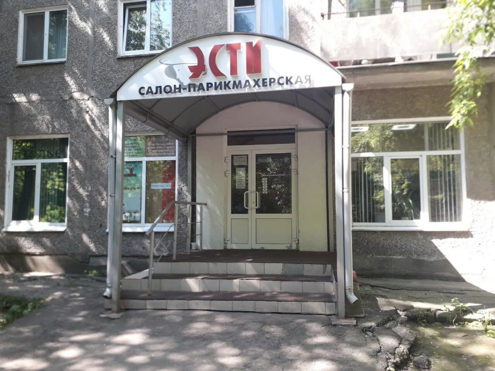

Парикмахерские услуги
Женская и мужская стрижка, льготная стрижка.
женская от 850 ₽ · мужская от 500 ₽Салон красоты · парикмахерская · маникюр · солярий
Стрижки, маникюр и педикюр, косметология, эпиляция и солярий на улице Бориса Корнилова в Нижнем Новгороде. Выберите услугу, день и время – запись по телефону.

Список услуг и цены на стрижки взяты с карточки салона на Яндекс.Картах. Остальное уточняйте по телефону.
Женская и мужская стрижка, льготная стрижка.
женская от 850 ₽ · мужская от 500 ₽Уход за руками и ногами.
цену называют при записиТатуаж, коррекция бровей, перманентный макияж губ, массаж лица, коррекция фигуры.
цену называют при записиШугаринг и восковая депиляция.
цену называют при записиЗагар в салоне, рядом с остальными услугами.
цену называют при записиУточнить цену и записаться – по телефону +7 (831) 468-44-51.
В форме вверху страницы: она подскажет, что назвать администратору.
+7 (831) 468-44-51. Предварительная запись есть, салон работает по записи.
Корпус 1. Вывеска «Эсти. Салон красоты» над входом, рядом парковка.
Фотографии с карточки салона на Яндекс.Картах.




Выбираете время заранее и приходите без очереди.
Можно оплатить услугу картой.
Рядом есть парковка, в салоне – Wi-Fi.
Можно подарить близким визит в салон. Можно прийти с собакой.
«Хожу в салон «Эсти» на маникюр и педикюр много лет. Мастера замечательные. Аккуратно и бережно приводят в порядок ручки-ножки. Вообще атмосфера очень приятная и располагающая.»
Наталья Г. · 3 июня
«Наконец-то нашла отличное место, где можно привести себя в порядок! Мастера здесь очень внимательные и настоящие профессионалы своего дела. Мне очень понравилось, как меня подстригли, получилось именно то, что я хотела. Атмосфера в салоне очень приятная и располагающая к отдыху.»
Ксения Мартынова · 14 февраля
Отзывы с карточки на Яндекс.Картах, без правок. Здесь показаны два из 82.
Женская стрижка – от 850 ₽, мужская – от 500 ₽. Цены на остальные услуги называют при записи: +7 (831) 468-44-51.
По телефону +7 (831) 468-44-51. Салон принимает по предварительной записи.
Нижний Новгород, улица Бориса Корнилова, 5, корпус 1. Ищите вывеску «Эсти. Салон красоты» над входом.
На карточке указано, что салон открыт до 20:00; на двери – график с 9:00 до 20:00. Выходные дни уточняйте при записи.